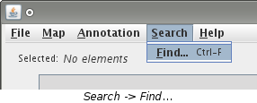
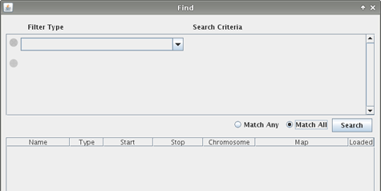
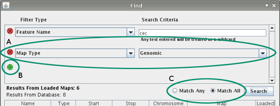
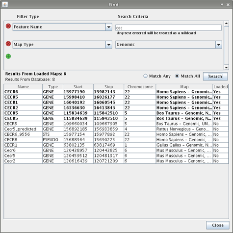
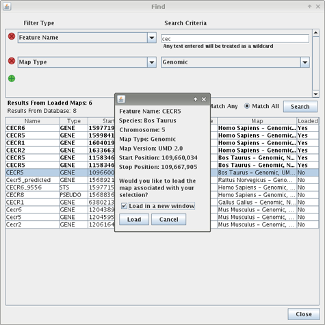
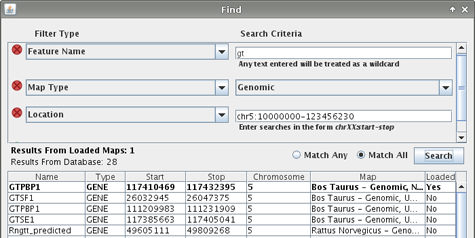

Searching for features is done with a loaded map(s) and on the VCMap database. If you need to load a map, consult the Load a Map page for help on doing this.





| Name | Start | Stop |
|---|---|---|
| A | 5 | 15 |
| B | 17 | 25 |
| C | 13 | 19 |
A search is performed with the start and stop positions being 10 and 20 respectively. C will be returned because its start and stop positions are both between 10 and 20. Features A and B will not be returned. While A's stop and B's start positions do fall between the searched values, A's start and B's stop positions do not and therefore these features will not be included in the results of the search.
